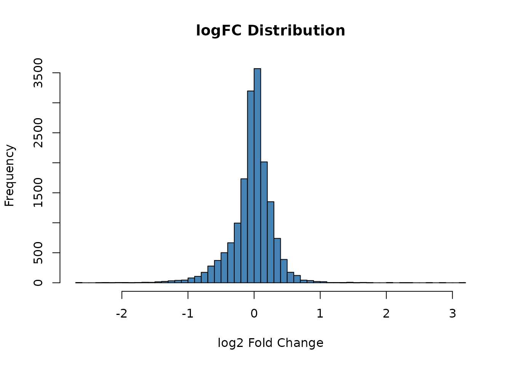

Tutorial: Full Vector Search
Source:vignettes/tutorial_vector_search.Rmd
tutorial_vector_search.RmdOverview
While Up/Down queries use only the most extreme genes, vector search uses the entire gene expression profile as a query. This approach:
- Leverages information from all genes (not just top/bottom)
- Uses rankZ transformation for robust similarity
- Supports adaptive sparsification to balance signal and noise
Setup
library(GPSA)
# Load database
db <- gpsa_load_db(preload_Z = TRUE, verbose = TRUE)
#> Preloading /Z into memory ...
#> Preloaded /Z (1062.9 MB) into RAM; subsequent queries avoid disk I/O.
#> Loaded DB: 19613 genes x 7103 signatures; Z_definition=cmap_rankZ_qnormPreparing a Full Vector Query
Extract Complete Expression Profile
# Get a reference signature's full logFC vector
sig_ref <- db$sigs[1] # Use first signature as example
gl_full <- gpsa_get_signature(db, sig_ref, dataset = "logFC")
# This contains logFC values for all genes
message(sprintf("Vector length: %d genes", length(gl_full)))
#> Vector length: 19613 genes
print(summary(gl_full))
#> Min. 1st Qu. Median Mean 3rd Qu. Max. NA's
#> -2.6369 -0.1458 0.0010 -0.0289 0.1330 3.1115 2803Understanding the Query Vector
# The vector is named by gene symbol
message("First 6 genes:")
#> First 6 genes:
print(head(gl_full))
#> OR4F5 OR4F29 OR4F16 SAMD11 NOC2L KLHL17
#> NA NA NA -1.3791029 0.3431084 -0.1106391
# Distribution of logFC values
hist(gl_full, breaks = 50, main = "logFC Distribution",
xlab = "log2 Fold Change", col = "steelblue")
Distribution of logFC values in the reference signature.
Running Vector Search
Basic Vector Search
out_vec <- gpsa_search_vector(
db,
gl_full,
eta = 0.90, # Capture 90% of signal energy
min_k = 300, # Minimum 300 genes
max_k = 5000, # Maximum 5000 genes
transform = "rankZ", # Apply rankZ transformation
normalize = TRUE # Normalize to unit length
)
# Check self-rank (should be very high)
self_rank <- gpsa_rank_in(out_vec$res, sig_ref)
message(sprintf("Self-rank in vector search: %d", self_rank))
#> Self-rank in vector search: 1Examining Compile Information
# The compile info shows how the vector was processed
message("=== Vector Search Compile Info ===")
#> === Vector Search Compile Info ===
print(out_vec$compile)
#> $type
#> [1] "vector"
#>
#> $transform
#> [1] "rankZ"
#>
#> $normalize
#> [1] TRUE
#>
#> $overlap_M
#> [1] 16810
#>
#> $k_used
#> [1] 5000
#>
#> $total_k
#> [1] 16810
#>
#> $eta
#> [1] 0.9
#>
#> $energy_capture
#> [1] 0.7805275
# Key fields:
# - k_used: number of genes retained after sparsification
# - energy_captured: fraction of signal energy retained
# - threshold: logFC threshold for sparsificationView Results
message("=== Vector Search Top 10 ===")
#> === Vector Search Top 10 ===
print(head(out_vec$res[, c("signature_id", "pbgene", "CellLineName",
"Score", "tau", "FDR_rank")], 10))
#> signature_id pbgene CellLineName Score tau FDR_rank
#> 1 D10001 ZFX LNCaP C4-2B 105.69251 99.97184 0.6666667
#> 869 D20051 ZFX LNCaP C4-2B 105.69251 99.97184 0.6666667
#> 5566 D26347 ZFX LN-229 54.61183 99.92961 0.8333333
#> 707 D10711 ZFX MCF7 50.94939 99.88737 0.8888889
#> 870 D20052 ZFX MCF7 50.94939 99.88737 0.8888889
#> 1787 D21099 MUC1 LNCaP clone FGC 38.04891 99.84514 0.9166667
#> 1117 D20335 HOXB13 LNCaP C4-2B 37.83574 99.81698 0.9285714
#> 3613 D23293 E2F1 LNCaP clone FGC 34.30287 99.78882 0.9375000
#> 6735 D27900 HOXB13 LNCaP 33.52484 99.76066 0.9444444
#> 4701 D25041 CHD6 LNCaP C4-2 33.38464 99.73251 0.9500000Understanding the Parameters
Energy Threshold (eta)
The eta parameter controls how much of the signal to
retain:
# High eta (0.95): Keep more genes, capture more signal
out_95 <- gpsa_search_vector(db, gl_full, eta = 0.95, min_k = 300)
message(sprintf("eta=0.95: %d genes used", out_95$compile$k_used))
#> eta=0.95: 5000 genes used
# Lower eta (0.80): Keep fewer genes, focus on strongest signals
out_80 <- gpsa_search_vector(db, gl_full, eta = 0.80, min_k = 300)
message(sprintf("eta=0.80: %d genes used", out_80$compile$k_used))
#> eta=0.80: 5000 genes usedMin/Max Gene Constraints
# Force at least 500 genes
out_min500 <- gpsa_search_vector(db, gl_full, eta = 0.90, min_k = 500)
message(sprintf("min_k=500: %d genes used", out_min500$compile$k_used))
#> min_k=500: 5000 genes used
# Limit to at most 1000 genes
out_max1000 <- gpsa_search_vector(db, gl_full, eta = 0.90, max_k = 1000)
message(sprintf("max_k=1000: %d genes used", out_max1000$compile$k_used))
#> max_k=1000: 1000 genes usedTransform Options
# rankZ (default): Robust to outliers, cMAP-style semantics
out_rankz <- gpsa_search_vector(db, gl_full, transform = "rankZ")
# none: Use raw values (if already transformed)
# out_raw <- gpsa_search_vector(db, gl_full, transform = "none")Comparing Vector Search vs Up/Down Query
# Up/Down query with same reference
query_ud <- gpsa_make_updown_query(gl_full, n_each = 500)
out_ud <- gpsa_search(db, query_ud, return_components = FALSE)
# Compare self-ranks
self_vec <- gpsa_rank_in(out_vec$res, sig_ref)
self_ud <- gpsa_rank_in(out_ud$res, sig_ref)
message("Self-rank comparison:")
#> Self-rank comparison:
message(sprintf(" Vector search: %d", self_vec))
#> Vector search: 1
message(sprintf(" Up/Down query: %d", self_ud))
#> Up/Down query: 1
# Compare top hits overlap
top_vec <- head(out_vec$res$signature_id, 100)
top_ud <- head(out_ud$res$signature_id, 100)
overlap <- length(intersect(top_vec, top_ud))
message(sprintf("Top 100 overlap: %d signatures", overlap))
#> Top 100 overlap: 68 signaturesAdaptive Sparsification Deep Dive
How It Works
- Compute squared values (energy) for each gene
- Sort genes by energy (descending)
- Cumulative sum until reaching eta fraction of total energy
- Retain those genes, zero out the rest
Examining Retained Genes
# Top genes by absolute logFC (these are most likely retained)
top_genes <- sort(abs(gl_full), decreasing = TRUE)[1:20]
message("=== Top 20 Genes by |logFC| ===")
#> === Top 20 Genes by |logFC| ===
print(top_genes)
#> HMOX1 AKR1C2 CEP112 ARNT2 DIO3 MVB12B LAMC2 AKR1C1
#> 3.111528 2.896467 2.636917 2.633612 2.631026 2.359932 2.304248 2.263790
#> CTSZ TMEM179 FAM149A CPM ANKRD65 CHST3 SMO CYFIP2
#> 2.247233 2.218804 2.195826 2.081277 2.043271 2.017116 2.014410 2.013749
#> GDF15 ARAP3 TWSG1 FHOD3
#> 2.003136 1.966111 1.943155 1.930056Using Custom Gene Lists
You can also use your own gene list (not from database):
# Create a custom geneList from your experiment
# Named vector: names = gene symbols, values = logFC
my_genelist <- c(
"TP53" = 2.5,
"BRCA1" = 1.8,
"EGFR" = -1.2,
"MYC" = -2.0
# ... more genes
)
# Search with custom list
# Note: genes not in database will be ignored
out_custom <- gpsa_search_vector(
db,
my_genelist,
eta = 0.90,
min_k = 10, # Lower min for small gene lists
transform = "rankZ"
)Handling Large Gene Lists
For very large input vectors:
# If you have expression for all genes
# The function automatically:
# 1. Filters to genes present in database
# 2. Applies sparsification
# 3. Normalizes the query vector
# Check overlap with database genes
overlap_genes <- intersect(names(gl_full), db$genes)
message(sprintf("Genes in common with database: %d", length(overlap_genes)))
#> Genes in common with database: 19613Best Practices
-
Start with default parameters:
eta = 0.90,min_k = 300,max_k = 5000 - Compare with Up/Down: Vector search should give similar but potentially better results
- Check compile info: Understand how many genes are actually used
- Use higher eta for subtle signatures: If changes are small, retain more genes
- Validate top hits: Always examine GSEA plots for biological relevance
Performance Notes
# Vector search is slightly slower than Up/Down due to:
# 1. Energy computation for all genes
# 2. Larger query vectors (more genes)
# But still very fast in memory mode (~0.2s)Summary
| Parameter | Default | Purpose |
|---|---|---|
eta |
0.90 | Fraction of signal energy to capture |
min_k |
300 | Minimum genes to retain |
max_k |
5000 | Maximum genes to retain |
transform |
“rankZ” | How to transform query values |
normalize |
TRUE | Normalize to unit length |
Session Info
sessionInfo()
#> R version 4.3.2 (2023-10-31)
#> Platform: x86_64-pc-linux-gnu (64-bit)
#> Running under: Ubuntu 22.04.2 LTS
#>
#> Matrix products: default
#> BLAS: /usr/lib/x86_64-linux-gnu/openblas-pthread/libblas.so.3
#> LAPACK: /usr/lib/x86_64-linux-gnu/openblas-pthread/libopenblasp-r0.3.20.so; LAPACK version 3.10.0
#>
#> locale:
#> [1] LC_CTYPE=C.UTF-8 LC_NUMERIC=C LC_TIME=C.UTF-8
#> [4] LC_COLLATE=C.UTF-8 LC_MONETARY=C.UTF-8 LC_MESSAGES=C.UTF-8
#> [7] LC_PAPER=C.UTF-8 LC_NAME=C LC_ADDRESS=C
#> [10] LC_TELEPHONE=C LC_MEASUREMENT=C.UTF-8 LC_IDENTIFICATION=C
#>
#> time zone: Asia/Shanghai
#> tzcode source: system (glibc)
#>
#> attached base packages:
#> [1] stats graphics grDevices utils datasets methods base
#>
#> other attached packages:
#> [1] GPSA_0.1.0
#>
#> loaded via a namespace (and not attached):
#> [1] vctrs_0.6.5 cli_3.6.2 knitr_1.45
#> [4] rlang_1.1.2 xfun_0.41 highr_0.10
#> [7] stringi_1.8.3 purrr_1.0.2 textshaping_0.3.7
#> [10] jsonlite_1.8.8 glue_1.6.2 htmltools_0.5.7
#> [13] ragg_1.2.7 sass_0.4.8 rmarkdown_2.25
#> [16] grid_4.3.2 evaluate_0.23 jquerylib_0.1.4
#> [19] fastmap_1.1.1 Rhdf5lib_1.24.1 yaml_2.3.8
#> [22] lifecycle_1.0.4 memoise_2.0.1 stringr_1.5.1
#> [25] compiler_4.3.2 fs_1.6.3 rhdf5filters_1.14.1
#> [28] rhdf5_2.46.1 lattice_0.22-5 systemfonts_1.0.5
#> [31] digest_0.6.33 R6_2.5.1 magrittr_2.0.3
#> [34] Matrix_1.6-4 bslib_0.6.1 tools_4.3.2
#> [37] pkgdown_2.0.7 cachem_1.0.8 desc_1.4.3